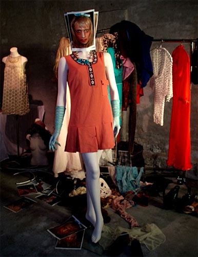

Fancy føroysk frumframsýning. Fancy faroese exhibition. |

| Mynd: Ringt var at fáa eyguni burtur frá serligu litføgru kollektiónini hjá Dennis Agerblad. Hesin starvast m.a. sum sangari, tónleikasmiður, performari, listamaður, grafikari, balettdansari og flogskipari. Hann hevði gjørt eina heilt serliga kollektión við einum heilt ávísum huglagi. Í myndatekstinum til kollektiónini stendur skrivað: ”Tað, sum eg eri mest áhugaður í, er at venda øllum skeivan veg. At blanda sannleika saman við lygn.” og hetta var eisini tað, sum merkti hesa kollektiónina. |
Himmalin var klárur og veðrið var gott, tá ið føroyska frumframsýningin ”Eggin” var á Norðuratlantsbryggjuni fríggjadagin 19. oktober. Meðan sniðgevarirnir standa og greiða áhugaðu áskoðarunum frá kollektiónunum, spælir populera danska dj-parið ArtRebels nøkur friðarlig løg, ið hóska sera væl til serliga huglagið inni á © Annika Hedegaard Isfeldt - Sosialurin |